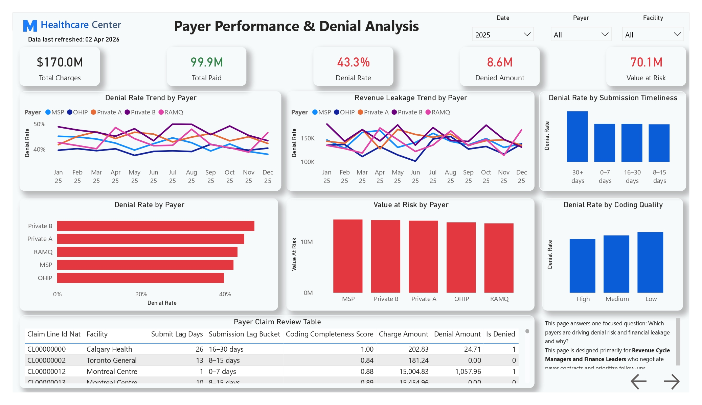
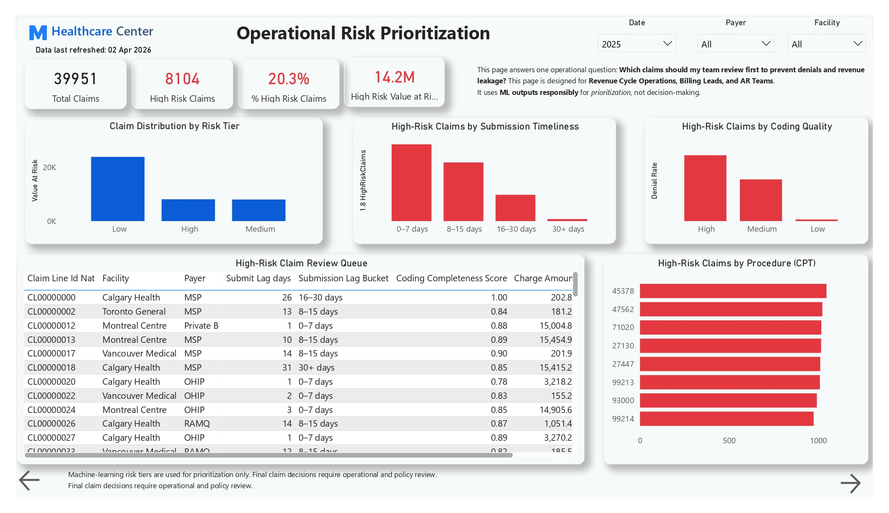
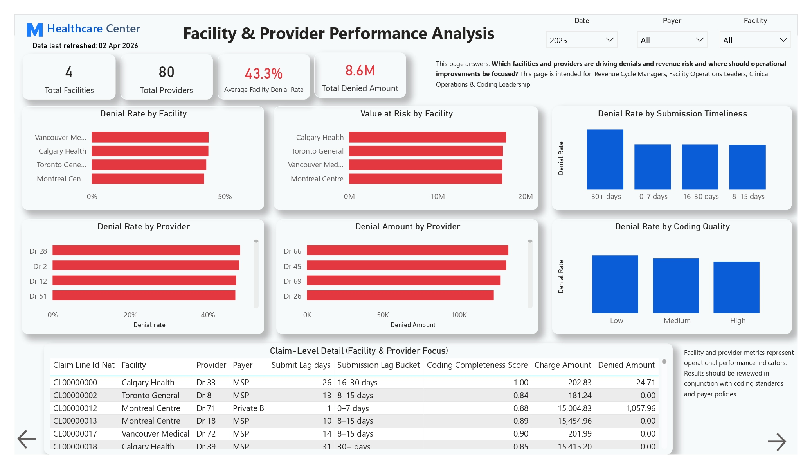
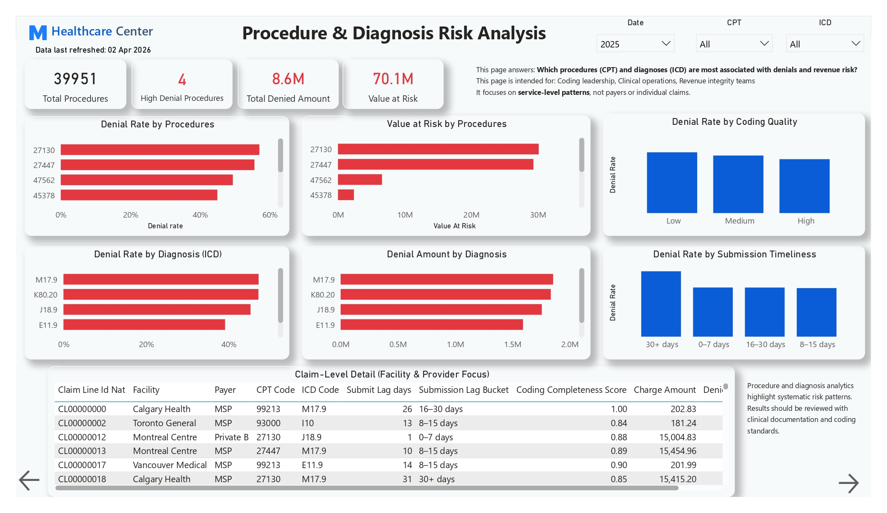
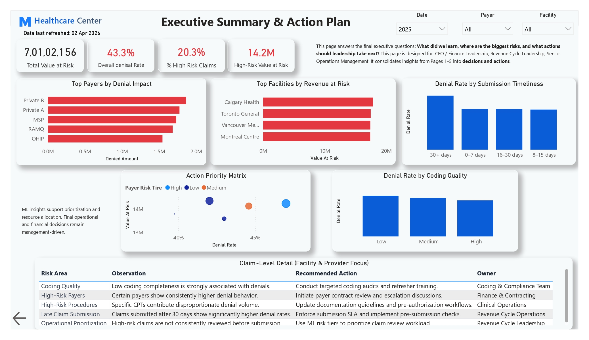
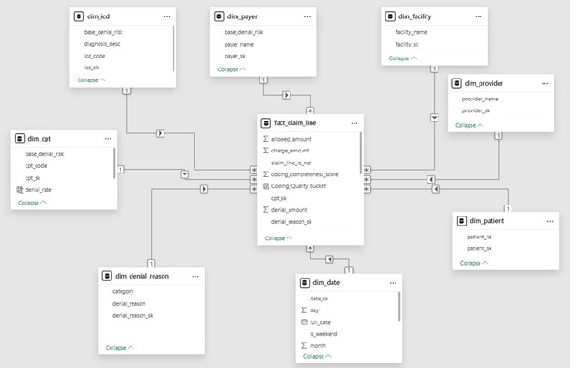

Fragmented Financial Visibility
Finance leaders had limited insight into why claims were rejected or how much net revenue was exposed across the billing cycle.
Architected a governed cloud revenue-cycle analytics and machine learning platform that identifies denial root causes, quantifies value at risk, and prioritizes high-risk claims before payer submission.
MapleCare Health faced major revenue leakage and cash-flow delays because claims were partially paid or denied after encounters without a unified analytical framework.
Finance leaders had limited insight into why claims were rejected or how much net revenue was exposed across the billing cycle.
Administrative, billing, coding, and clinical documentation teams operated separately, increasing submission delays and coding errors.
Staff spent excessive effort appealing denials after submission rather than preventing high-risk claims before they reached payers.
Opaque or ungoverned predictive approaches risked data leakage, over-automation, legal non-compliance, and untrustworthy decisions.
A governed end-to-end cloud warehouse, analytical layer, and predictive model moved the organization from retrospective denial review to proactive risk mitigation.
PL_Claims_Ingestion_MapleCare ingested daily ADLS Gen2 claims extracts into Azure SQL using Managed Identities.
dbo.ingestion_audit captured row counts, file metadata, timestamps, and pipeline failures for end-to-end observability.
fact_claim_line represented one billed service line and connected to conformed patient, provider, payer, facility, denial, CPT, ICD, and date dimensions.
Python EDA validated billing logic, calculated submit_lag_days, and monitored high-value outliers with the IQR method without deleting them.
Discount severity, realization efficiency, financial-volume flags, and safe historical aggregates were engineered from pre-adjudication information.
Post-adjudication proxies such as denial_amount and paid_to_allowed_ratio were removed before Gradient Boosting and Logistic Regression evaluation.
Power BI delivered cash-flow, payer-contract, root-cause, ML risk, documentation, and remediation perspectives.
Azure Logic Apps routed pipeline errors to administrative Teams channels for rapid response.
The platform converted messy transactions into a governed enterprise source of truth.
Enterprise claims exposure became visible in one analytical environment.
Finance teams gained clear visibility into realized reimbursement.
The platform clearly exposed denied or underpaid financial value.
Denial patterns were linked to coding completeness, billing lag, and payer-contract variation.
Commercial contract behavior was benchmarked against other payers.
Payer-level comparison revealed material contract variation.
The decision-support engine isolated the exact high-risk tier before submission.
The high-risk claim tier represented a significant preventable revenue opportunity.
Billing analysts gained a prioritized pre-submission queue with measurable SLA targets for coding and clinical documentation teams.
A governed cloud architecture connects claims ingestion, audit logging, warehouse modeling, risk prediction, and executive remediation.
Daily claims header and line files
Rows, files, timestamps, and failures
Claim-line star schema and conformed dimensions
Leak-proof pre-submission risk model
Prioritized remediation queue and SLA targets
Pipeline failures are logged and routed through Azure Logic Apps to administrative Teams channels.







Replace this placeholder with the public Power BI embed URL after publishing the report.
The repository contains project documentation, pipeline details, notebooks, screenshots, and predictive-model implementation context.
Discover more healthcare analytics and enterprise data transformation projects.